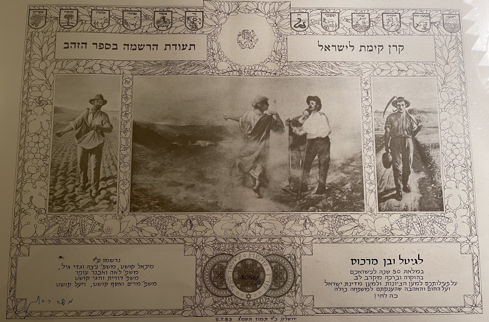
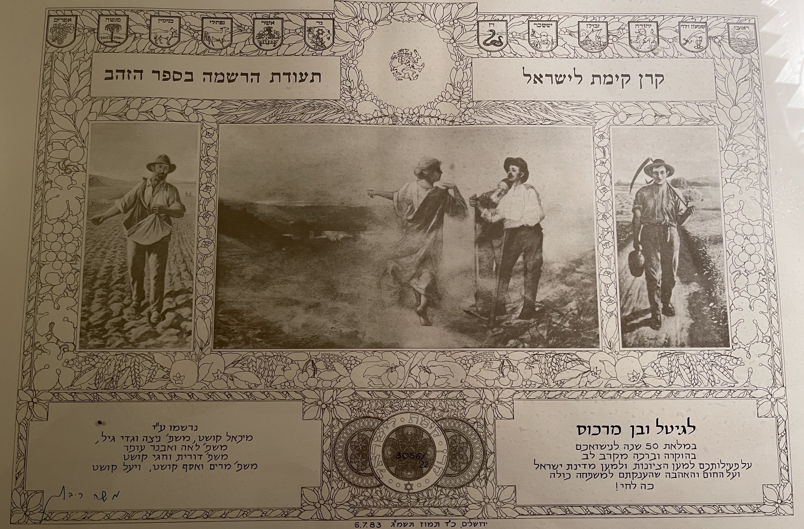

c. 1870 Antipol, Belarus
Hodes and Zundel, my grandfather's great grandparents. They lived in Antipol, the shtetl in Belarus where both my maternal grandfather's and grandmother's family originated. In my family, the word "Antipol" is used like an abstract noun. It is Jewishness, tradition and heritage, pride in toughness and survival, family lore, pain and happiness. It is a way of viewing and understanding the past, and it is a word that my family and I will carry into the future. This is one of the only pictures I have of family in Antipol - it too represents these things.

c. 1880 Hamburg, Germany
Top: My paternal ancestors, including my great great great great grandfather, great great great grandfather, and great great grandmother, at a Jewish community picnic in Hamburg. The group depicted was part of the relatively new Reform Jewish movement, and you can see that Jewish cultural and communal life here is strong.
Bottom: My paternal great great great great grandfather, Siegfried Freidman, and his wife, also in Hamburg.
c. 1880 Minsk, Russia
My Zayze's (we call my Zaide "Zayze" because my oldest cousin couldn't pronounce Zaide when he was) grandmother, with her children Delia, Eva and Minna. They later immigrated to the U.S. for a better life and to escape the constant looming threat of pogroms. Once in America, they used the surname Gerstein. While in Russia, however, they had regularly changed their last name to confound the Russian census takers who would conscript the men into the army - from which they would never be released.
The imagery of these women immigrating to the U.S. with three young children in tow is evocative of Piercy's writings on the courage required for Jews to leave their homes for a better life.
1939
Brooklyn, NY
My maternal ancestors. In the top left corner is my great grandpa Benjamin Marcus, standing next to his brother-in-law Michoil Koshet, one of the founders of Kibbutz Yifat in Israel. In the bottom left is my great grandma, Gittel Koshtshuk, sitting next to her mother, father, and sister. The baby is my great aunt, Sheila. Gittel and her family were from Antipol. Great Grandpa Ben was born in Minsk. As a young child, "Benko" supported his family by collecting and reselling trash. He made extra money by peeing into empty bottles and selling this "fine wine" to the passing soldiers, who were often virulently anti-Semitic. This is one of my favorite family stories.
The cleverness of my great grandpa Ben - which you can practically see in his smile and the sparkle in his eyes in this picture - reminded me of Tevye the Dairyman . I picture both stories taking place in the forests and winding paths of Eastern Europe/Western Russia, and featuring quips in Yiddish and humor and hidden acts of defieance in the face of anti-Semitism.
P.S. Great Grandpa Benjamin's brother is the great grandfather of Max Marcus (also in this class). Max and I are third cousins, and we met for the first time at shabbat dinner at UChicago Hillel.
c. 1940 Antipol, Belarus
Residents of Antipol mourn the first martyrs of the Holocaust. The majority of my maternal ancestors chose to stay in Antipol despite the increasing anti-Semitism. They owned a well-established pickle-making business and hoped to ride out the violence. My great great grandparents were the few members of the family who emigrated in time.
1942 Antipol, Belarus
The site of the mass murder of the remaining Jews in Antipol. Almost all of my great great grandmother Rifka's family (Rifka is my grandfather's mom) were killed here. Photos like these - and the stories and images of the Holocaust that we studied in class - feel deeply personal and haunting. Even if I cannot discern my actual ancestors in these grainy, black and white photos, I see my family members and feel their pain.
c. 1950
Lincoln, NE
My paternal grandfather's (Zayze's) father and family. They were sent to Lincoln, Nebraska to work in railroad construction as soon as they got off the boat in America in the early 1900's. Zayze's grandfather worked as a tool maker, and his father, Grandpa Abe Schwartz, was a boxer. In the front and center is "Bobo," who ran a dry goods store in Rock Island, Illinois and eventually moved to Omaha, Nebraska. In foreign towns with tiny Jewish populations - far from their native Russia - they quickly adapted and achieved the quintessential Americana dream, while still managing to preserve their Judaism.
1956
Brooklyn, NY
My great great grandmother Channah and great great grandfather Mishaleizer, both born in Antipol. They visited Israel in 1950, and when they returned, Bubby Channah (who spoke Yiddish and a bit of English) said that she couldn't understand anything the people were saying in Israel, and that she felt stupid, since even the cows there understood Hebrew (she saw them responding to the herders' shouts of "Boi, Boi!"). The imagery of Hebrew-speaking cows - and the humor, frustration, and confusion that ensue with language barriers - necessarily brings to mind The Rabbi's Cat .


1964
Wilmington,
NC
My Bubby and Zayze are married at my Bubby's synagogue. My Bubby was working on the picket line with the NAACP the summer she met my Zayze. The Jewish community in Wilmington put enormous pressure on her to disassociate herself from the movement. The community was afraid that there would be reprisals against the Jewish community from the KKK, which was rampant in the area. But she continued to strive for a world free of discriminatory violence. She was the descendant of victims of pogroms and had experienced extreme anti-Semitism herself in Wilmington.
1965
Toronto, Ontario, Canada
My Grandma and my Grandpa Harvey, who I am named after. In 1964 Grandpa Harvey moved to New York for his fellowship in hematology/oncology at Sloane Kettering. When he first arrived from Canada, he was staying with his cousins, and when he arrived to their house and knocked on the door, my grandma opened it. She was completing her PhD in microbiology at City College of New York at the time. The rest was history.
My grandma grew up in Brooklyn, and my grandpa in Windsor, Ontario. His family emigrated from Antipol, fleeing the anti-Semitic violence to which they later lost many relatives - but encountered virulent anti-Semitism in Canada. His father, a peddler who sold on time, would often be thrown out of houses and denied payment when he came to collect, simply for being Jewish. When Grandpa Harvey was seeking work, he was denied at multiple Toronto hospitals due to pervasive Jewish quotas. His defiance - implicit in his success and constant work ethic - and the theme of encountering discrimination even in a new, supposedly more welcoming home, is echoed in A-WA's "Hana Mash Hu Al Yaman."
c. 1980
Stanstead, Quebec, Canada
My Bubby, Zayze, dad and brothers on their farm in Quebec.
Bottom: My Bubby, Zayze, Great Grandpa Abe, and Uncle John outside the barn.
From the time my Bubby was a college student at Duke she had wanted to live on a kibbutz. She and my Zazye had plans to move to Kibbutz Hagoshrim, but the Lebanese war broke out and they could not get permission to live so close to the border.
So, in 1977, my Zayze quit his job as a director of operations at a consulting firm and he and my Bubby moved their family to a farm in southern Quebec. They built out their farm house; raised chickens and ducks; planted a huge garden full of strawberries, red currants, raspberries, and blackberries, goosberries; planted a 450-tree apple and cherry orchard; and pursued a career as artists in what time they had remaining. They were original hippies, and chalutzim in their own right.

1974 Hollywood, FL
Great Grandpa Ben and Great Grandma Gigi (Gittel) helping my mom and aunt light the Chanukkah candles at their condo in Florida, where they spent each winter.
Each morning in Florida, Gittel poured my mom a bowl of Life cereal and a glass of fresh orange juice. This is one of my favorite breakfasts to this day - if not because it is delicious, because it brings me closer to Grandma Gigi, who I never had the privilege of meeting but is a beloved family figure and role model. Etgar Keret's Shoes portrays this phenomenon of finding connections to ancestors through mundane objects like cereal or shoes, and reflects on the task of holding on to joy and fond family memories when preserving a family history that also contains much pain.
 


1983 Jerusalem, Israel
After being separated - flung across countries from Israel to Canada - at the dawn of the 20th century, members of the Marcus and Koshtshuk family reunited in Jerusalem to celebrate my mom's Bat Mitzvah. During the reception, Ben and Gittel were presented with a certificate recognizing their 50th wedding anniversary and 50 years of support of Israel, including their funding of a hospital and the Antipol Synagogue in Tel Aviv. They were the first generation of their families to find respite from violent anti-Semitism and witness the fruition of a Jewish homeland.
P.S. The reception took place in the same room where Begin and Sadat met to discuss the 1979 Egypt-Israel peace treaty.
1990 Kibbutz Yifat, Israel
A memorial video for my Grandma's cousin, Chagai, filmed at Kibbutz Yifat. Chagai was a distinguished pilot in the IDF. He passed away in a crash during a training exercise. Kibbutz Yifat was founded by my ancestors who fled from Antipol prior to the Holocaust. When I watch this video, I am struck by the beauty and serenity of the kibbutz, as well as the sheer number of Jewish family members and friends depicted. I've never been to Israel - never seen such a large, naturally-occurring Jewish community. The video truly represents the achievement of the longings of Zionism - and the somber cause for its creation is a reminder of the sacrifices and pain that are often in tension with happiness and success in the Jewish experience.
2010 Antipol, Belarus
My Grandma and Aunt visited Antipol to return to the origins of our family's history and the site of horrific events that have had ripple effects on my family. The mass grave where our family members were buried is now covered in verdant grass. The Jewish cemetery where the first victims of anti-Semitic violence were buried was ransacked during the final liquidation of Antipol's Jews.
2018 Queens, NY
While in New York in 2018, I visited the first building Grandpa Benjamin had bought in America. While outside the building with my Dad, a man walked out, and we began to chat. His name was Carlos Suarez, and his brother was the building Super. Arnold Marcus (Benjamin Marcus's son) opened the doors to Carlos and his family when they first moved to America from the Dominican Republic in the 1990's. They've had a close relationship with the Marcus family ever since. He spent half of his adult life in 4541 39th Place, Queens, NY, where his dad was once the building superintendent, and he recently returned to live. The original elevator - picked out by Great Grandpa Benjamin - remains in use. As I ascended to the top floor in it, Mr. Suarez alongside me, past, present, and future seemed to coalesce. Though I'd never before been in the building, I felt at home.